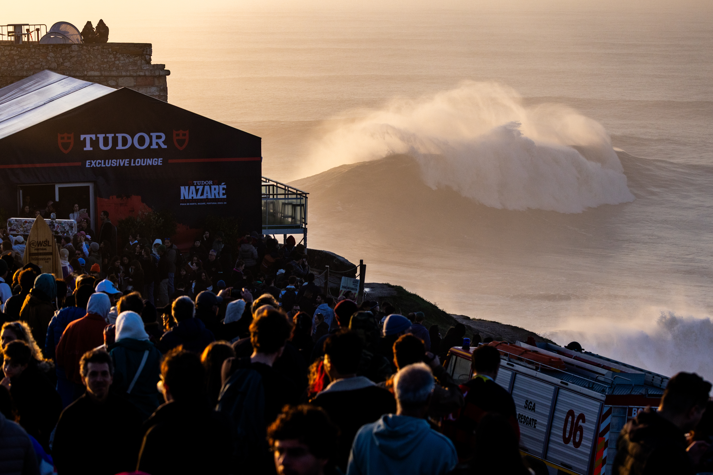

O Nazaré Big Wave Challenge é uma das competições mais impressionantes do surfe de ondas gigantes. Realizado na Praia do Norte, em Nazaré, Portugal, o evento reúne especialistas preparados para enfrentar paredes de água que podem ultrapassar 15 metros de altura. Diferentemente dos campeonatos tradicionais, a disputa não segue um calendário com dia fixo: é o comportamento do oceano que determina quando os atletas entram na água.
A competição utiliza o formato tow-in, no qual os surfistas são rebocados por jet skis para alcançar ondas de dimensões extremas. O modelo exige técnica, experiência, preparação física e uma sintonia fundamental entre o atleta e o parceiro responsável pela condução e pelo resgate.
Na temporada 2026/2027, o TUDOR Nazaré Big Wave Challenge tem uma janela oficial de competição entre 1º de novembro de 2026 e 31 de março de 2027. Esse período corresponde aos meses de maior atividade das grandes ondulações do Atlântico Norte, mas não significa que o campeonato aconteça durante todos esses meses. A prova é disputada em um único dia, escolhido conforme as condições do mar, do vento e da segurança.
Nazaré tem algumas das maiores ondas do mundo
A Praia do Norte ganhou reconhecimento internacional pelas condições naturais que favorecem a formação de ondas gigantes. O principal responsável por esse fenômeno é o chamado Canhão da Nazaré, uma formação submarina que influencia diretamente o comportamento das ondulações que chegam à costa portuguesa.
O canhão possui aproximadamente 227 quilômetros de extensão e atinge profundidades de até cinco quilômetros. Sua estrutura interfere na propagação das ondas vindas do Atlântico, contribuindo para a concentração de energia e para o encontro de diferentes ondulações próximo ao litoral.
Quando esse fenômeno se combina com tempestades no oceano, direção favorável das ondas, ventos e marés, a Praia do Norte pode apresentar condições excepcionais para o surfe de ondas grandes.
É essa combinação que explica por que Nazaré ocupa um lugar tão importante no cenário internacional da modalidade. O local não depende apenas da força das tempestades, mas também das características geográficas que tornam suas ondas especialmente poderosas.
Ao longo dos anos, a região se consolidou como destino de surfistas especializados em desafios extremos. A história de Nazaré e dos brasileiros que marcaram o pico ajuda a compreender a importância da praia portuguesa para a evolução do surfe de ondas grandes.
Como funciona o Nazaré Big Wave Challenge
O campeonato é disputado no formato tow-in, uma modalidade desenvolvida para permitir que atletas alcancem ondas cuja velocidade e potência dificultam a entrada apenas com a remada.
Nesse sistema, um jet ski reboca o surfista até a região de formação da onda. Depois que o atleta assume a descida, o piloto permanece responsável pelo suporte e pela segurança, podendo atuar no resgate em situações de queda.
A colaboração é parte essencial da competição. Não basta que o surfista tenha capacidade técnica para enfrentar ondas gigantes: o parceiro também precisa dominar a leitura do oceano, os procedimentos de aproximação e as operações de resgate.
Para a edição 2026/2027, a WSL anunciou alterações no formato competitivo, buscando ampliar o tempo de participação dos atletas e equilibrar as disputas masculinas e femininas.
No masculino, seis duplas são distribuídas em duas semifinais, com três equipes em cada bateria. A dupla vencedora de cada semifinal avança diretamente à decisão. A terceira vaga fica com a dupla segunda colocada que apresentar a maior pontuação entre as duas baterias.
Na categoria feminina, três surfistas disputam uma única final, cada uma acompanhada por seu respectivo piloto de jet ski. A premiação reconhece o desempenho individual da competidora.
Além da disputa coletiva masculina, existem premiações individuais para as melhores performances de homens e mulheres.
As notas individuais são determinadas pelas duas melhores ondas surfadas por cada atleta. A onda de maior pontuação recebe peso dobrado, enquanto a segunda melhor também entra no resultado.
Cada onda pode receber uma nota de zero a dez pontos. Assim, um surfista pode alcançar até 30 pontos em sua pontuação individual.
A competição contempla três premiações principais:
- Melhor Performance Masculina: maior pontuação individual entre os homens.
- Melhor Performance Feminina: maior pontuação individual entre as mulheres.
- Melhor Performance de Dupla Masculina: melhor resultado coletivo entre as equipes masculinas.
Essa estrutura permite reconhecer tanto a capacidade individual de enfrentar ondas gigantes quanto o trabalho conjunto dos atletas nas duplas masculinas.
Brasileiros estão entre os convidados
O Brasil possui presença importante no surfe de ondas gigantes e aparece entre os países representados na lista inicial de convidados da edição 2026/2027.
Duplas masculinas:
- Lucas Chianca (Chumbo) e Pedro Scooby
- Rodrigo Koxa e Vitor Faria
- Will Santana e Gabriel Sampaio
Representação feminina:
- Michelle des Bouillons — surfista
- Ian Cosenza — piloto de jet ski
Outras duplas masculinas:
- Nic von Rupp (Portugal) e Clement Roseyro (França)
- Andrew Cotton (Reino Unido) e James Carew (Austrália)
- Benjamin Sanchis (França) e Jerome Sayhoun (Marrocos)
Outras participantes femininas:
- Justine Dupont (França) — piloto: Dino Carmo (Portugal)
- Laura Crane (Reino Unido) — piloto: Eric Rebiere (França)
Ao todo, a lista inicial reúne nove equipes convidadas: seis masculinas e três femininas. A relação de participantes poderá sofrer alterações até a realização da competição.
A tradição brasileira em Nazaré
A presença de surfistas brasileiros é um dos elementos de destaque do Nazaré Big Wave Challenge. Lucas Chianca e Pedro Scooby formam uma parceria conhecida no cenário das ondas gigantes, enquanto Rodrigo Koxa também integra o grupo de especialistas associados aos grandes desafios da Praia do Norte.
Na edição 2025/2026, realizada em 13 de dezembro de 2025, Lucas Chianca conquistou o prêmio de Melhor Performance Masculina. A disputa por equipes terminou com vitória de Nic von Rupp e Clement Roseyro, enquanto Justine Dupont recebeu o prêmio de Melhor Performance Feminina.
Aquela edição também demonstrou como as condições de segurança influenciam diretamente o campeonato. Depois de um início afetado pelo nevoeiro, uma falha de energia comprometeu a continuidade da disputa, e os resultados foram definidos com base na primeira rodada.
O episódio reforçou uma característica central do surfe de ondas gigantes: a realização da competição depende não apenas da qualidade das ondas, mas também da capacidade de manter atletas e equipes de apoio em segurança.
Prazo de espera
Uma das principais particularidades do Nazaré Big Wave Challenge é a janela de competição.
No lugar de estabelecer antecipadamente um dia para as baterias, a WSL define um período de espera e monitora as previsões de ondulação. A organização procura uma combinação de ondas suficientemente grandes, condições adequadas de vento e maré e segurança operacional.
Para a temporada 2026/2027, a janela começa em 1º de novembro de 2026 e termina em 31 de março de 2027.
O campeonato exige uma ondulação consistente de pelo menos 25 pés, aproximadamente 7,6 metros, além de condições favoráveis para a disputa. As ondas efetivamente surfadas podem alcançar dimensões superiores.
Quando existe a possibilidade de realização da prova, a organização pode emitir um alerta amarelo com até 72 horas de antecedência. Esse comunicado sinaliza que as condições estão sendo avaliadas para uma possível ativação.
O alerta verde representa a confirmação da intenção de realizar o campeonato nas 24 horas seguintes, desde que as condições previstas se mantenham.
O sistema permite mobilizar surfistas, equipes de segurança e estrutura operacional para aproveitar o momento mais adequado do oceano. Também explica por que o evento não possui uma programação diária definida com meses de antecedência.
Onde assistir ao Nazaré Big Wave Challenge
O campeonato tem transmissão ao vivo prevista no site oficial da World Surf League e no aplicativo gratuito da WSL.
Como a data depende das condições do oceano, os horários de início das disputas também são definidos na programação específica divulgada pela organização.
Referência mundial do surfe extremo
Nazaré representa uma vertente particular do surfe profissional. Diferentemente das competições disputadas em ondas menores, o desafio envolve enfrentar algumas das maiores formações de água surfáveis do planeta, exigindo preparação especializada e planejamento coletivo.
A edição 2026/2027 mantém essa tradição, reunindo nomes reconhecidos da modalidade, participação brasileira e um formato de disputa que valoriza performances individuais e coletivas.
A janela entre novembro e março estabelece o período em que a competição poderá ser realizada, mas o momento decisivo continuará dependendo das condições naturais da Praia do Norte.
Essa relação direta com o oceano é justamente uma das características que tornam Nazaré tão especial. No campeonato de ondas gigantes de Portugal, os atletas chegam preparados, a organização acompanha as previsões e o espetáculo só começa quando o mar oferece as condições necessárias.